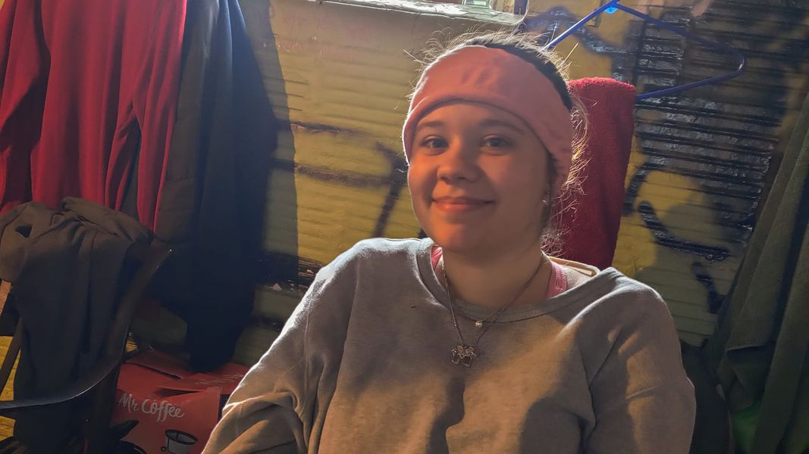

Mobile uploads
This is my friend Aubrey. She's the young, pregnant woman I've been telling you about who is living in a tent at the Houseless Movement Garden
I have tried to be very careful about what I share of her life with you. And I'll continue to do so.
I asked her if she'd let me take her picture. Her first thought was: Do I look ok? We all assured her that she did.
These young women living in tents steal my heart every single time.
So many people in authority jump to blaming the victim. "Why isn't she staying at the emergency shelter?" "Why isn't she calling 211?" It's always asking why she isn't doing more when really we all need to stop Monday morning quarterbacking her life and start asking ourselves: what more could WE be doing?
And, as always, that's where you come in. You always rise to the occasion. You are so great I'm a little nervous about how best to organize all the help you will want to give this young woman.
So what I'd like to try is to setup a Facebook just for Aubrey. I can fill you in on details there. If you'd like to learn more about her please join me over there.
Here's the group:
https://www.facebook.com/groups/1377133599384906/?ref=share